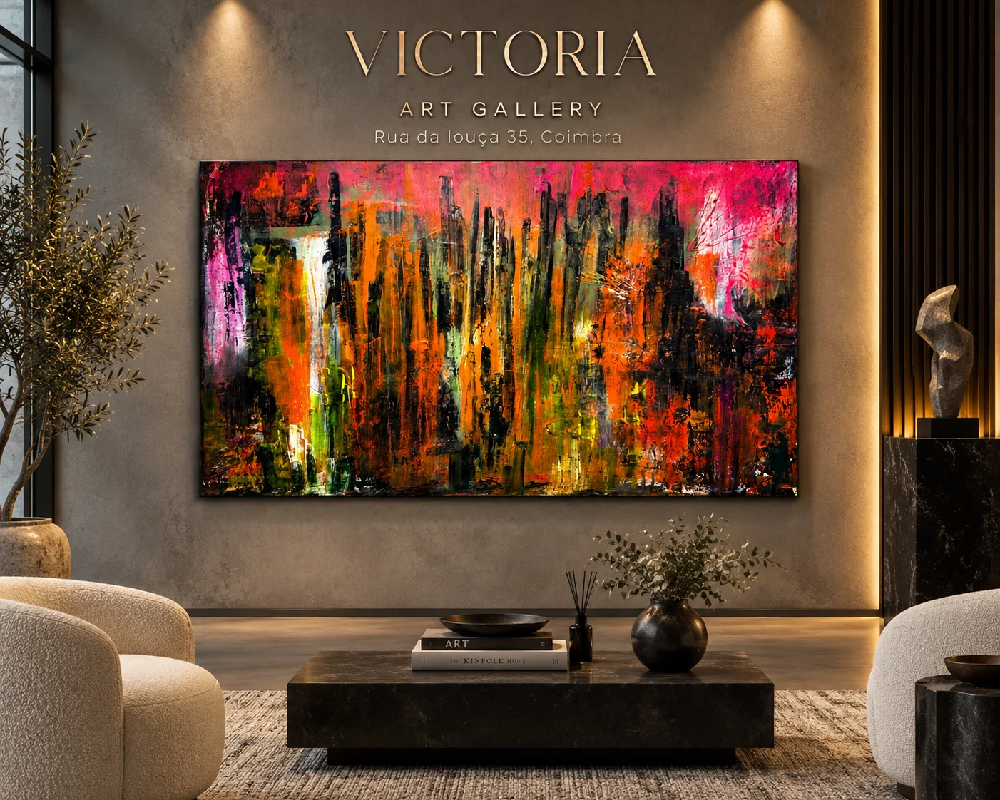

Victoria
Contreras
Paintings of colour, light and memory.
The artist
As a Colombian artist, I grew up surrounded by vibrant colours, majestic tropical landscapes, extraordinary wildlife, and the ancestral richness of my cultural heritage.
This environment shaped my imagination from an early age and became a profound source of inspiration for my artistic journey.
Through painting, I explore the emotions that emerge from my relationship with nature, light, colour, and the human experience. My work seeks to create a space where energy and serenity can coexist, inviting the viewer to pause, feel, and connect.
For me, colour, texture, form, and light are not merely visual elements; they carry emotion, memory, and meaning.
Each work evolves through an intuitive dialogue between the material and my inner world, allowing the painting to develop its own language.
Every artwork holds a fragment of my experience and sensibility. Through it, I share a part of myself with the viewer, with the hope of awakening a sense of wonder, emotion, serenity, and connection.
Victoria Contreras
The collection

Visit the gallery
Victoria Art GalleryRua da Louça 35
Coimbra, Portugal
- Monday to Friday
- 10:00 – 19:00
- Saturday
- 09:00 – 19:00
- Sunday
- 09:00 – 18:00
The gallery opened in Coimbra’s Baixa in October 2024 and hosts exhibitions, workshops and evenings with music and wine. To ask about a work, a commission for an interior, or delivery, send a message on Instagram.